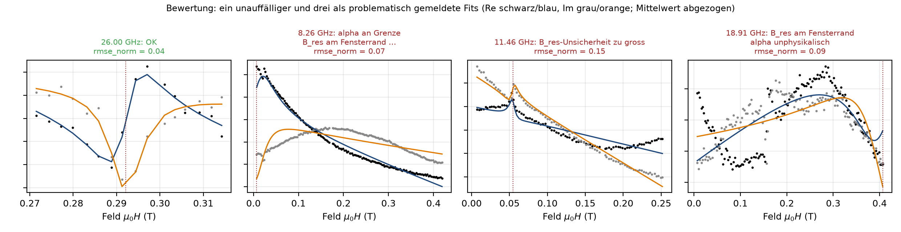

Bewertung der Fits¶
bewerte_fit (fit/kriterien.py) – problematisch, sobald eine Bedingung zutrifft:
| Kriterium | Bedingung | Konstante | |
|---|---|---|---|
| a | Residuum | rmse_norm > 0.35 (RMSE/Signalhub nach Untergrundabzug); Notbremse chi2_red > 1e6 |
RMSE_NORM_SCHWELLE, CHI2_RED_NOTBREMSE |
| b | an Schranke | alpha, phi, B_res innerhalb 1 % des Schrankenabstands |
GRENZ_NAEHE_REL |
| c | außerhalb | B_res ∉ Fenster |
|
| d | unphysikalisch | alpha > alpha_plausibel (Standard alpha_max/2 = 0.05; einstellbar Strg+P) |
ALPHA_PLAUSIBEL_MAX |
| e | Konvergenz/Kovarianz | kein Erfolg; keine Unsicherheiten und rmse_norm > 0.10 |
RMSE_NORM_EXZELLENT |
| f | Unsicherheit | B_res_err/|B_res| > 2 % |
B_RES_REL_UNSICHERHEIT_MAX |
| g | zu wenige Punkte | weniger als 12 Messpunkte im Fenster/Korridor | MIN_PUNKTE_FIT |
| h | Linie nicht aufgelöst | µ0ΔH < 1,5 Feldschritte |
DH_MIN_FELDSCHRITTE |
R² ist kein Gütemaß (Untergrund dominiert die Varianz → R² ≈ 1 auch ohne Resonanz). chi2_red (Rauschen aus zweiten Differenzen, MAD/√6) wird exportiert, nicht zur Einstufung genutzt.

Nur unproblematische Fits gehen in Kittel/LLG (_gute_ergebnisse). Schwellen nicht zur Schönung lockern. Bei mehreren Moden werden b–d für jede Mode geprüft.
Nutzer-Bewertung und Status-Farben¶
FitErgebnis.bewertung ∈ auto (Kriterien entscheiden) · bestaetigt (gilt als gut) · verworfen (gilt als problematisch); problematisch ist der wirksame Zustand, problematisch_auto das reine Kriterienergebnis (beides im Export). Gezielte Einzel-Nachfits (Grenzen ziehen, Nochmal fitten) werden standardmäßig bestaetigt (nachfit_bestaetigen, Strg+P); Bereichs-/Grenzgeraden-Fits über viele Frequenzen, Zonen-Nachrechnungen und Projekt-Wiederherstellung bleiben auto. setze_bewertung liefert eine Kopie (Undo-sicher).
Farben und Formen nach DIN EN 60073 / ISO 3864 (gui/farben.py); Form als zweites Merkmal (DIN EN ISO 9241-125):
| Status | Farbe | Marker | Bedeutung |
|---|---|---|---|
gut |
grün | ● | Kriterien erfüllt |
bestaetigt |
grün, blauer Rand | ● | vom Nutzer als gut bestätigt |
problem |
gelb | ▲ | Kriterien verletzt oder vom Nutzer verworfen – prüfen |
fehler |
rot | ✕ | keine Konvergenz / kein Ergebnis |
ignoriert |
grau, dunkler Rand | ● | Ausreißer (nur mit Ansicht → Ignorierte anzeigen) oder nicht gefittet |
| Mode k ≥ 2 | Mode-Farbe | ● | Korridor-Fit einer weiteren Mode (Status wie Mode 1) |
Blau kennzeichnet aktive Modi, Auswahl und Bedienzustände; gelb Warnungen im Protokoll, rot Fehler.